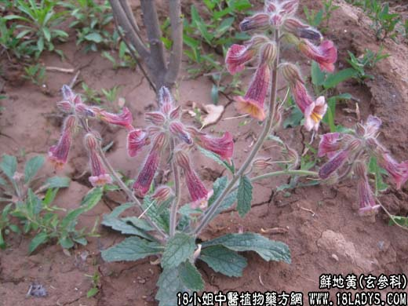

【中药概述】
鲜地黄为玄参科草本植物地黄的新鲜块根。甘、苦，寒。归心、肝、肾经。
清热凉血，养阴生津：用于温热病、高热、舌绛、身发斑疹，以及血热妄行引起的吐血、衄血等症，对于热入营血，灼伤阴液，津少口渴之症尤为适宜，常与犀角，丹皮，玄参等同用。如（<
地黄煎>生地黄汁，生门冬汁，白沙蜜酥）。
【药效鉴别】
鲜地黄甘寒多汁，略带苦味，性凉而不滞，质润而不腻，具有清热生津、凉血止血之效。
【用量用法】
本品10——30g，水煎服，或入剂。
【注注注注】
鲜地黄，古代文献称为生地黄，而现今则称干地黄为生地，为避免混淆起见，故分别标出“鲜”、“干”以示区别。